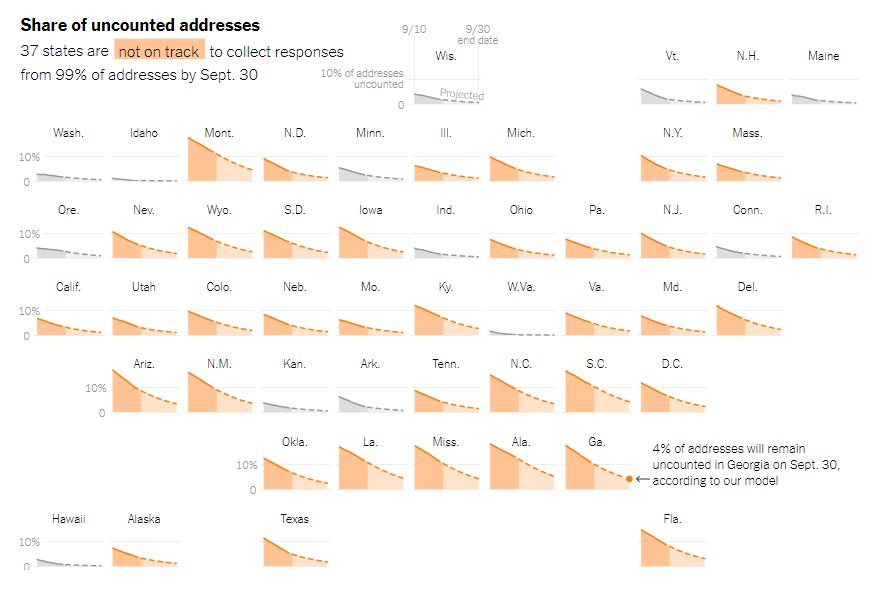
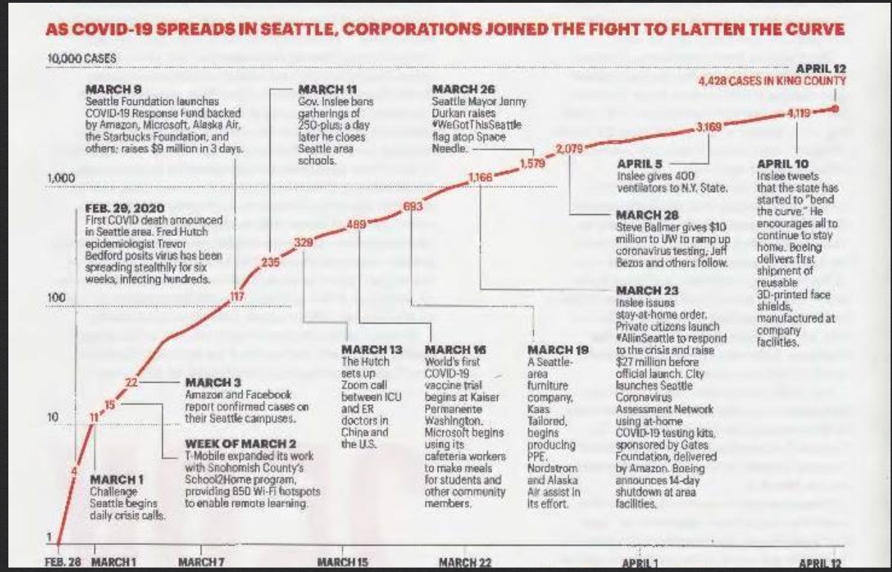

Good Design 1: Census Undercount
 SourceThe purpose of the graph is to show the ongoing census count status, and the audience is the Trump Administration. Census undercounts or overcounts influence federal funding to states which will affect public health programs, public school systems, and other services because incorrect census counts cause poor allocation of federal resources. The purpose of the visual is to show the harmful effects of the Trump administration pushing the Census Bureau to end the count early, because as of September 23rd, 37 states are not on track to collect responses from 99% of addresses by September 30th, the current end of the census count. The visual shows the predicted percentage of addresses that will be uncounted at the end of the census. The visualization encodes US states and the percentage of addresses currently uncounted, and the projected model for the percentage that will still be uncounted, and dates ranging from September 10th to September 30th. The visualization encodes states by using small multiples with graphs for each state in the shape of the US. Each graph is a line chart with percentage uncounted on the y axis and date on the x axis. Color encoding is used with orange for states that are not on track and gray for states that are on track for collecting 99% of addresses. Readers can compare state census progress and see trends through clusters of states that are or are not on track. The graph is truthful, using forecasted data from a study done by the American Statistical Association. The graph is beautiful and functional, with a minimal design that is intuitive to read. It is also insightful and enlightening in that it draws attention to the harmful effects of ending the census early and the percentage of addresses that would be left uncounted. Given that it clearly shows its message, is straightforward to read, and conveys its message that many addresses will be left uncounted on September 30th, it is a good visualization.
Good Design 2
SourceVERY GOOD
Good Design 3: Dog Trade
 Source
Source
EXTREMELY GOOD
Bad Design 1: Texas COVID Hospitalizations
 Source
Source
The purpose of this graph is to give updates on the coronavirus hospitalizations in DFW, Houston, San Antonio, Austin, and El Paso, and statewide from May 31, 2020 to present. The data used is from the Texas Department of State Health Services. The audience is Texas residents who want updates on cases within their state as the graph is found on NBC DFW. The designers of this graph use a line chart to encode the time series data and colors to indicate which region each line represents. The x axis is time, which would in this case is a quantitative variable, and the x axis is the number of hospitalizations which is also quantitative. Using this graph, readers can see hospitalizations by region, which is a sign there are more cases in the region, and to see when hospitalizations peak or are at a low. This visualization uses data is from a reliable source and the report mentions that there was a dip in numbers in July 23 due to incomplete data rather than deceiving the reader into thinking there was a dip due to a decrease in cases. The visualization is easy to read with clearly different colors and labels, and it has a minimal design. It is insightful in that its goal is to show viewers updates that give them an understanding of how the coronavirus situation is in their region and statewide and can be enlightening in that it can convince readers of the importance of mask wearing and social distancing given the severity of the situation. This visualization’s strengths are that it displays important news and that the design would be clear and functional if not for some the design flaws. One flaw is that the y axis is misleading because the height between 100 and 1,000 is the same as the height between 1,000 and 9,000 but the difference is far greater. Because this difference in values is not accurately reflected in the y axis, it looks like statewide the hospitalizations are not that high, but the numbers are multiple times higher than any individual region. Given that the y axis is not evenly divided, it is difficult to compare how different regions are encoded because the graph has gray horizontal lines that get increasingly closer together towards 1,000 and 10,000.
Redesigns


* Best Redesign *
For my redesigns, two of them are line graphs using color encoding like the original, one is a stacked bar chart that has color encoding, one is a stacked area chart, and one is a heat map that uses square areas and color gradient encoding. Among these, I think the stacked area chart would be best to address the problem. It generally uses the same color scheme as the original, each color representing one region, though one difference is that instead of a color representing statewide, purple represents hospitalizations in the state not including the numbers in the five regions because stacked up together all areas equal the statewide number of hospitalizations. My design changes the y axis so that the distances between the numbers are all equally proportioned, and it is easier to see how much each region makes up of statewide hospitalizations. The tradeoff that I did have to make is that it’s more difficult to tell the number of individual hospitalizations at certain points in time because it’s stacked as opposed to the original where the line would clearly indicate how many there were. For example, to tell how many cases there were in DFW on July 12th, one would have to estimate that it is the difference between 2650 and 5000. However, I found that this chart was best in being able to show both statewide and region numbers on the same graph with an evenly distributed y axis.
Bad Design 2: Seattle COVID Cases
 SourceTHIS IS A REALLY BAD DESIGN
Redesigns

* Best Redesign *
Bad Design 3: Florida COVID Cases
 Source
Source
THIS IS A REALLY BAD DESIGN
Redesigns